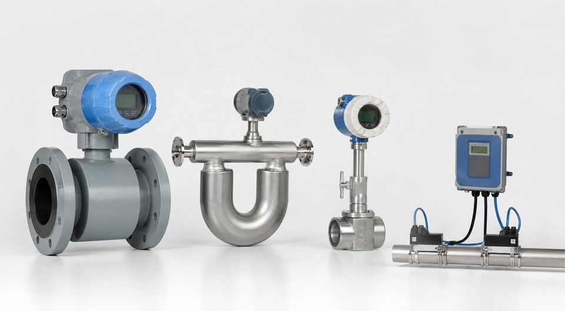

چرا انتخاب فلومتر سخت است؟
اندازهگیری دبی یکی از متنوعترین حوزههای ابزار دقیق است: دهها فناوری مختلف، هر کدام با نقاط قوت و محدودیتهای خاص. سیال (رسانا، خورنده، دارای ذرات، گاز یا مایع)، رنج دبی، دقت موردنیاز، افت فشار مجاز و بودجه، همگی در انتخاب نقش دارند. اشتباه رایج، انتخاب بر اساس قیمت یا عادت است؛ در حالی که هر فناوری برای پنجرهای مشخص از شرایط بهینه شده است. این راهنما نقشهای برای پیمایش این پنجرهها ارائه میدهد.

فلومتر مغناطیسی
فلومتر مغناطیسی بر اساس قانون فارادی کار میکند: سیال رسانا در میدان مغناطیسی حرکت کرده و ولتاژی متناسب با سرعت تولید میکند. مزایای بزرگ آن، نبود بخش متحرک، نبود افت فشار و تحمل ذرات معلق است؛ به همین دلیل انتخاب اول آب، فاضلاب و دوغابهای رقیق محسوب میشود. محدودیت اصلی، نیاز به رسانایی سیال است؛ هیدروکربنها و آبهای بسیار خالص با این فناوری اندازهگیری نمیشوند. انتخاب لاینر و الکترود متناسب سیال نیز اهمیت دارد.
فلومتر کوریولیس
فلومتر کوریولیس جرم سیال را مستقیم اندازهگیری میکند: لولههای مرتعش با عبور سیال تغییر شکل میدهند و این تغییر، متناسب با دبی جرمی است. دقت بسیار بالا، اندازهگیری مستقل از تغییرات دما و فشار و امکان اندازهگیری چگالی، آن را برای انتقال مالکیت، اندازهگیریهای مالی و سرویسهای حساس بیرقیب میکند. بهای آن، هزینه بالاتر و افت فشار نسبی است؛ بنابراین انتخاب آن باید با توجیه اقتصادی دقت موردنیاز همراه باشد.
گردابی، فراصوت و اختلاف فشاری
- گردابی (ورتکس): بدون بخش متحرک، مناسب بخار و گازهای تمیز؛ به جریان آرام نیاز دارد.
- فراصوت: نصب غیرتهاجمی یا داخل خط، بدون افت فشار؛ مناسب خطوط بزرگ و آب.
- اختصاصی توربین: دقت خوب برای سوخت و مایعات تمیز؛ بخش متحرک دارد.
- اختلاف فشاری با اوریفیس: ساده، ارزان و استاندارد برای نقاط عمومی.
مقایسه سریع فناوریها
| فناوری | سیال مناسب | دقت نسبی | نقطه قوت |
|---|---|---|---|
| مغناطیسی | مایعات رسانا و دارای ذرات | خوب | بدون افت فشار |
| کوریولیس | مایعات و گازها | بسیار خوب | اندازهگیری جرمی |
| گردابی | بخار و گاز تمیز | خوب | بدون بخش متحرک |
| فراصوت | آب و مایعات تمیز | خوب | نصب غیرتهاجمی |
| اختلاف فشاری | همه | متوسط | هزینه کم |
مقایسه نسبی برای انتخاب اولیه؛ جزئیات در مقالات اختصاصی هر فناوری آمده است.
یک نکته عملی نیز مهم است: پیش از سفارش، شرایط واقعی خط را در محل بررسی کنید؛ لرزش، نویز الکتریکی، فضای نصب و دسترسی برای کالیبراسیون، همگی میتوانند عملکرد یک فناوری را در عمل تغییر دهند. مشورت با سازنده و ارائه پرسشنامه کامل فرایند، ریسک انتخاب را به حداقل میرساند.
جمعبندی
انتخاب فلومتر یعنی تطبیق فناوری با سیال، دقت موردنیاز و بودجه: مغناطیسی برای آب و فاضلاب، کوریولیس برای دقت و انتقال مالکیت، گردابی برای بخار و گاز تمیز، فراصوت برای خطوط بزرگ و اختلاف فشاری برای نقاط عمومی. با تعریف دقیق این پارامترها در استعلام، از خرید تجهیز نامتناسب و هزینههای دوبارهکاری جلوگیری میشود.
سوالات رایج
دقیقترین فلومتر کدام است؟
فلومترهای کوریولیس معمولاً بالاترین دقت را در اندازهگیری جرمی دارند و برای انتقال مالکیت و اندازهگیریهای حساس انتخاب میشوند؛ البته هزینه آنها نیز بالاتر است.
برای آب و فاضلاب کدام فناوری مناسب است؟
فلومتر مغناطیسی انتخاب اول است؛ چون افت فشار ندارد، بخش متحرک ندارد و با آبهای دارای ذرات به خوبی کار میکند؛ به شرط رسانا بودن سیال.
فلومتر فراصوت چه مزیتی دارد؟
امکان نصب غیرتهاجمی در برخی طرحها و نبود افت فشار؛ برای خطوط بزرگ و نقاطی که امکان برش خط وجود ندارد گزینه جذابی است.
چرا نباید فقط بر اساس قیمت انتخاب کرد؟
هر فناوری محدودیتهایی در سیال، دقت و پایداری دارد؛ انتخاب ارزان اما نامتناسب، به خوانشهای غیرقابل اتکا و دوبارهکاری پرهزینهتر منجر میشود.
مطالب مرتبط
با ذکر سیال، رنج دبی، سایز خط و الزامات دقت، فلومتر متناسب از برندهای معتبر عرضه میشود.
مشاهده صفحه محصول ← ثبت RFQ همین محصولتامین این تجهیزات را به پیشرو تجهیز فرتاک بسپارید
شرکت پیشرو تجهیز فرتاک تامینکننده تخصصی تجهیزات صنعتی برای پروژههای نفت، گاز، پتروشیمی، فولاد و نیروگاهی است. برای دریافت پیشنهاد فنی و قیمت، استعلام (RFQ) خود را ثبت کنید تا کارشناسان مهندسی فروش در کوتاهترین زمان پاسخ دهند.
- تامین ابزار دقیقترانسمیترها و آنالایزرهای برندهای معتبر
- تامین تجهیزات صنایع نفت و گازپکیج مواد مطابق وندورلیست